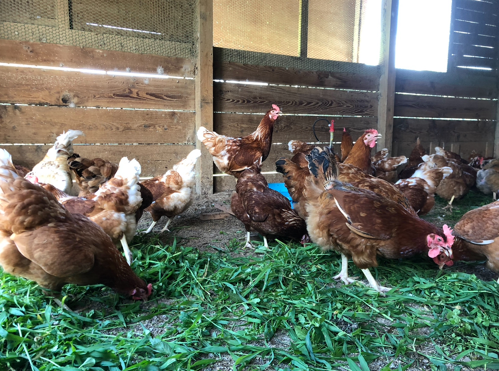
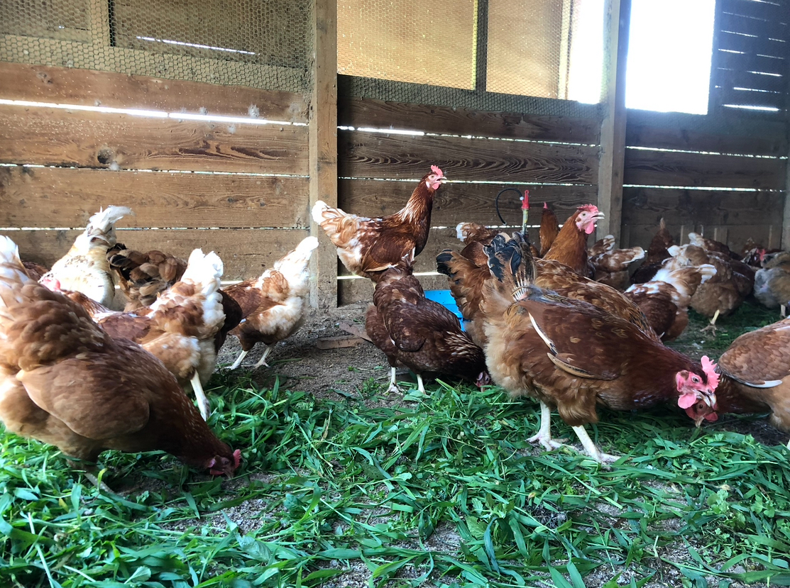

動物福祉の理念として提唱されている【5つの自由】を念頭に飼育することを心がけています。 飢え、渇きからの自由 不快からの自由 痛み、負傷、病気からの自由 本来の行動がとれる自由 恐怖、抑圧からの自由 また日々それぞれの家畜の特性を観察し、それを快適さにつなげて鶏や豚がのびのびと過ごせるように世話をしていきたいと思っています。 家畜の生活の質の向上が生産物の質の向上につながると考えています。 にわとり 少数飼育で各々の鶏が羽ばたきや砂浴び、座って休むなど好きなときにやりたいことが充分できる広さの中で飼育をしています。 ぶた 土に存分に触れられる環境で飼育しています。母豚の妊娠ストールは使用せず、分娩ストールは検討中です。 肥育豚は兄弟で1つの群れとして過ごすので群れを混ぜた際のけんかや序列争いはありません。 エサ 登米市近郊で作られた米や麦、おから、ホエイ、しょうゆかすなどを混ぜたものを与え、野菜や緑餌も毎日あげています。飲み水は近くの地下水を汲んで与えています。